Funkcjonalne rozwiązania, dobra izolacja termiczna i szeroki wybór wzorów oraz kolorów dopasowanych do stylu Twojego domu.
Bramy segmentowe to jedno z najpopularniejszych rozwiązań stosowanych w garażach, cenione za wygodę użytkowania i funkcjonalną konstrukcję. Podczas otwierania panele przesuwają się po prowadnicach pod sufitem, dzięki czemu brama nie zajmuje miejsca przed garażem.
W zależności od modelu segmenty mają grubość 40 lub 60 mm. Do wyboru są panele gładkie, bez przetłoczeń, z jednym przetłoczeniem lub z wieloma przetłoczeniami. Bramę można również wyposażyć w przeszklenia, zapewniające dostęp światła dziennego, oraz drzwi przejściowe, umożliwiające wejście do garażu bez otwierania całej bramy.
Zapytaj o wycenę
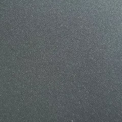

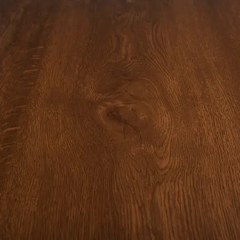
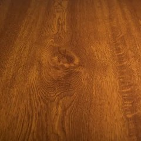
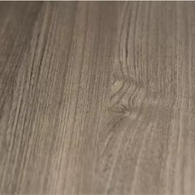
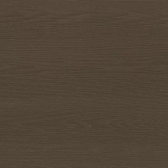
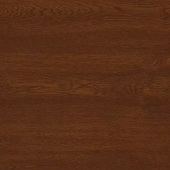
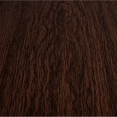
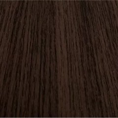
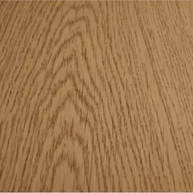
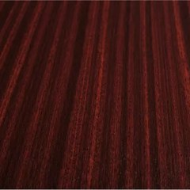
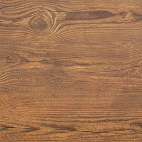
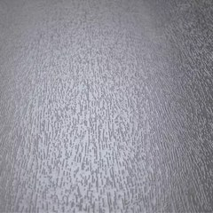
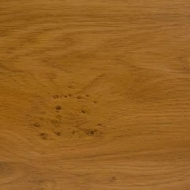
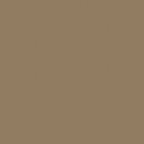
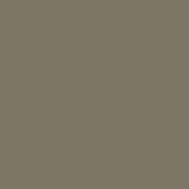
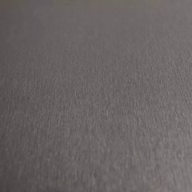
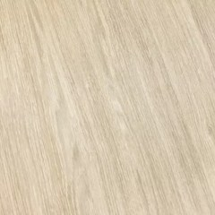
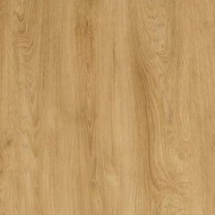
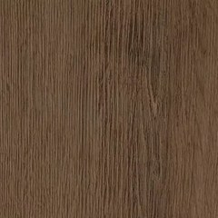
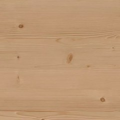
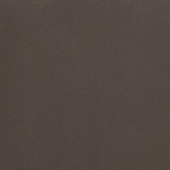
Oprócz pokazanych kolorów dostępne są ponad 200 kolorów z palety RAL (także w lakierowaniu strukturalnym), okleiny drewnopodobne oraz lakierowanie na kolor z palety NCS.
Panele unoszą się pionowo, a następnie przesuwają po prowadnicach pod sufitem — brama nie zajmuje miejsca przed garażem ani na podjeździe.
Bramy segmentowe otwierane automatycznie wyposażone są w napęd paskowy, który zapewnia płynną i cichą pracę. Istnieje również możliwość zastosowania rozwiązań Somfy Smart Home, dzięki którym bramą można sterować zdalnie i zintegrować ją z inteligentnym systemem zarządzania domem.
Skontaktuj się z nami — doradzimy technicznie i przygotujemy kalkulację cenową.